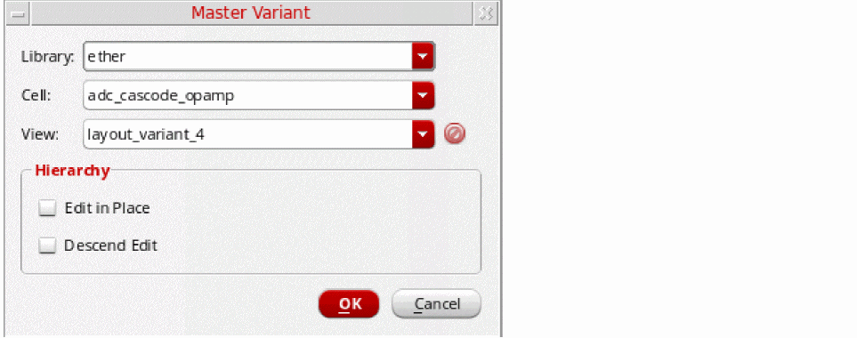

Generating Master Variant
-
Right-click the layout instance in the Navigator assistant or canvas and choose the Master Variant command.
You can select multiple instances simultaneously for variant view generation. But, all the selected instances must belong to the same master. Else, the master variant generation fails.
The Master Variant form opens with the library, cell, and view names same as that of the source layout view.
 -
(Optional) Choose a library in which the master variant of the selected layout instance needs to be created. Leave the default selection, if you want the variant to be created in the current selected instance master library.
If you do not have permission to edit the selected library, a message is issued indicating that the master variant generation has failed. -
(Optional) Choose a cell in which the master variant of the selected layout instance needs to be created. Leave the default selection, if you want the variant to be created in the current cell.
(Optional) Choose the view name for the master variant. You can choose to retain the default variant name,layout_variant_<number>, or type in a new view name.
If the view name to use already exists, you can choose it from the drop-down list. In this case, a thumbnail image of the view displays in the Master Variant form. When an existing variant view is selected, the new variant is not created on disk, but the selected layout instance is remastered. -
Click OK to proceed with the master variant generation.
The physical binding of the new master is automatically updated in CPH and the instance remains bound to the schematic instance. If the instance selected is a transparent instance, the physical binding is automatically updated in CPH, but the instance remains unbound.
Cadence recommends that manual editing of physConfig be avoided. But, in cases where such edits are required, these edits will need to be manually saved in the Configure Physical Hierarchy window.
Related Topics
Configure Physical Hierarchy Window
Return to top